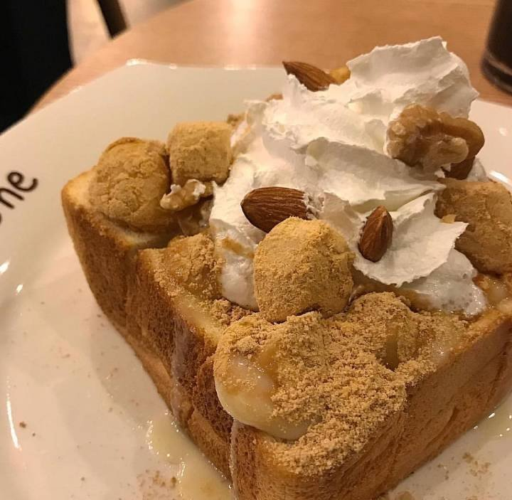

Lady dessert 1
Black Forest cake consists of several layers of chocolate cake, with whipped cream and cherries between each layer.
Lady dessert 2
The egg tart is a kind of custard tart pastry commonly found in Hong Kong and other Asian countries, which consists of an outer pastry crust that is filled with egg custard and baked.
Cocktail 1
A cocktail is a kind of mixed drink. Usually, it is made with alcoholic drinks such as vodka, gin or rum. Since such spirits do not have much taste of their own (at around 40% alcohol), other ingredients are added.
Cocktail 2
If the cocktail is served in a bar or nightclub, it is often garnished with a piece of fruit, for example, a gin and tonic could be garnished with lemon, a Piña Colada with pineapple and a cherry.